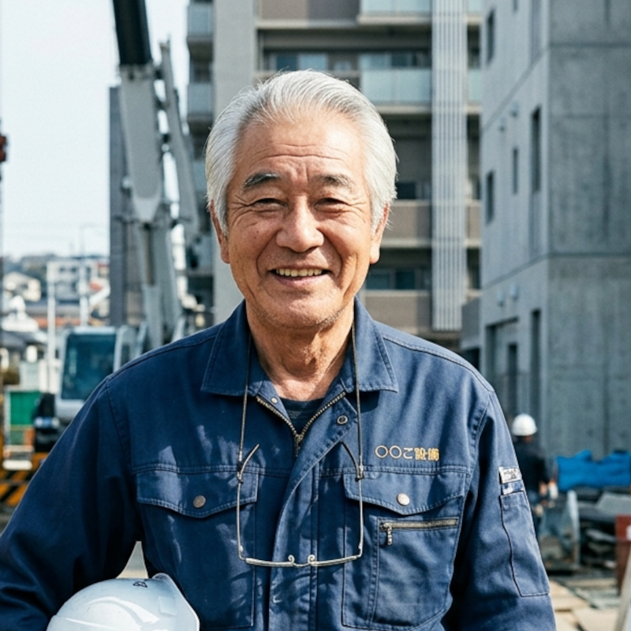

現場を知る行政書士が、建設業許可を迅速・確実に。
元現場監督（経験10年）の代表 鈴木誠が、現場の言葉で、御社の許可申請をプロデュースします。
4つの大きな強み
現場経験があるからこそできる、建設会社様に寄り添ったサポート体制。
現場経験10年の専門性
元現場監督なので図面や現場用語も熟知。建設業特有の事情を汲み取った書類作成を行います。
更新・決算報告の継続支援
許可取得はスタート。その後の毎年の決算報告や5年ごとの更新まで、期限管理を含め一貫支援。
24時間以内の返信
お急ぎの案件も安心。メール、LINE、電話、いかなるチャットツールでも24時間以内にレスポンス。
全国フルリモート対応
Zoomやクラウド署名を活用。来所・対面不要で、多忙な経営者様の時間を奪わずに手続きが完了します。
サービス内容
御社の事業成長に合わせた最適なサポートプランをご提案します。
新規許可申請
110,000円〜要件診断から営業所写真の撮影アドバイス、膨大な書類作成まで全て丸投げOK。確実に許可取得へ導きます。
- check_circle 知事許可・大臣許可
- check_circle 一般・特定
更新・業種追加
55,000円〜5年ごとの更新はうっかり忘れが命取り。期限管理を当事務所で行い、抜け漏れなく申請を行います。
- check_circle 許可有効期限の管理
- check_circle 決算変更届（毎年）
経営事項審査
88,000円〜公共工事の入札参加に必要な経審。点数アップのシミュレーションと、複雑な評価手続きを代行します。
- check_circle 経営状況分析
- check_circle 点数シミュレーション
お客様の声
実際にサポートさせていただいた建設業者様からのご感想です。
「現場監督出身ということで、図面の説明をする手間が省けて非常に助かりました。専門用語がそのまま通じるのは、忙しい身としては本当にありがたいです。」

A工務店 代表取締役様
（東京都・大工工事業）
「許可の更新期限が迫っていたのですが、迅速な対応で無事に継続できました。決算変更届の期限管理まで任せられるので、今は本業に専念できています。」
株式会社B設備 様
（埼玉県・管工事業）
「経審の点数アップについて、具体的なアドバイスをいただけたのが収穫でした。公共工事の受注に向けて、心強いパートナーができたと感じています。」

C土木興業株式会社 様
（千葉県・土木工事業）
代表行政書士
鈴木 誠
大学卒業後、大手ゼネコンに現場監督として10年間勤務。数多くの施工現場を管理する中で、建設会社における許可維持の大切さと手続きの煩雑さを痛感しました。
「現場に負担をかけない許可申請」をモットーに独立。現場用語がそのまま通じる行政書士として、経営者様と同じ目線で対話することを大切にしています。
登録番号
第22000000号
実務経験
現場経験 10年